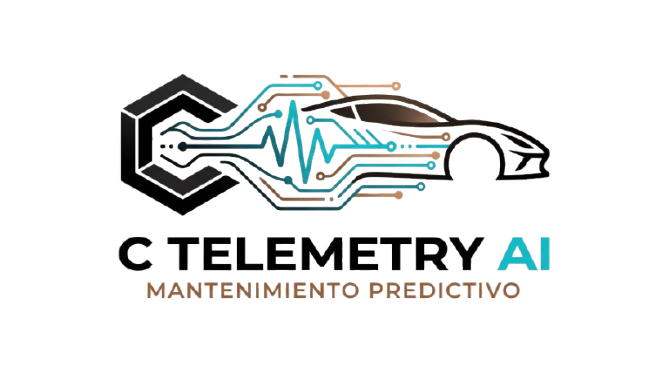

En C Telemetry AI hemos desarrollado una plataforma tecnológica pionera de mantenimiento predictivo basada en redes de procesamiento de telemetría y algoritmos de Inteligencia Artificial de última generación. A diferencia de los lectores mecánicos tradicionales que solo registran averías cuando el daño ya es irreparable, nuestra arquitectura de diagnóstico continuo se conecta directamente a la red CAN Bus del vehículo para interpretar las fluctuaciones térmicas, presiones y desviaciones operativas en tiempo real.
La verdadera ventaja competitiva de nuestro motor de IA radica en su capacidad de aprendizaje adaptativo constante. Cada vehículo genera un perfil de comportamiento dinámico único; la Inteligencia Artificial procesa la tasa de incremento de gradientes clave (como diferenciales de temperatura o desviaciones de presión de aceite) detectando patrones anómalos imperceptibles para el conductor días o semanas antes de que se encienda un testigo en el cuadro de mandos. Esto permite programar visitas al taller de forma proactiva, eliminando de raíz las roturas catastróficas en carretera y optimizando el ciclo de vida de los componentes del motor.
Al tratarse de una tecnología multimarca y universal, nuestra solución ofrece una cobertura integral adaptada a cualquier perfil de uso. Es la herramienta definitiva para conductores particulares que desean erradicar la incertidumbre de quedarse tirados en la carretera, así como para flotas comerciales, taxistas y servicios de transporte de pasajeros, para quienes un vehículo inmovilizado por avería implica pérdidas económicas directas y costes desproporcionados de grúa y reparación urgente.
Al completar tu registro e iniciar sesión en C Telemetry AI, accederás de manera inmediata a tu Dashboard corporativo personalizado. Desde este panel privado podrás monitorizar la telemetría en tiempo vivo, analizar gráficas de tendencia con la evolución de los sensores clave de tu motor y revisar la valoración diagnóstica emitida en tiempo real por nuestra IA sobre la salud integral de tu vehículo.